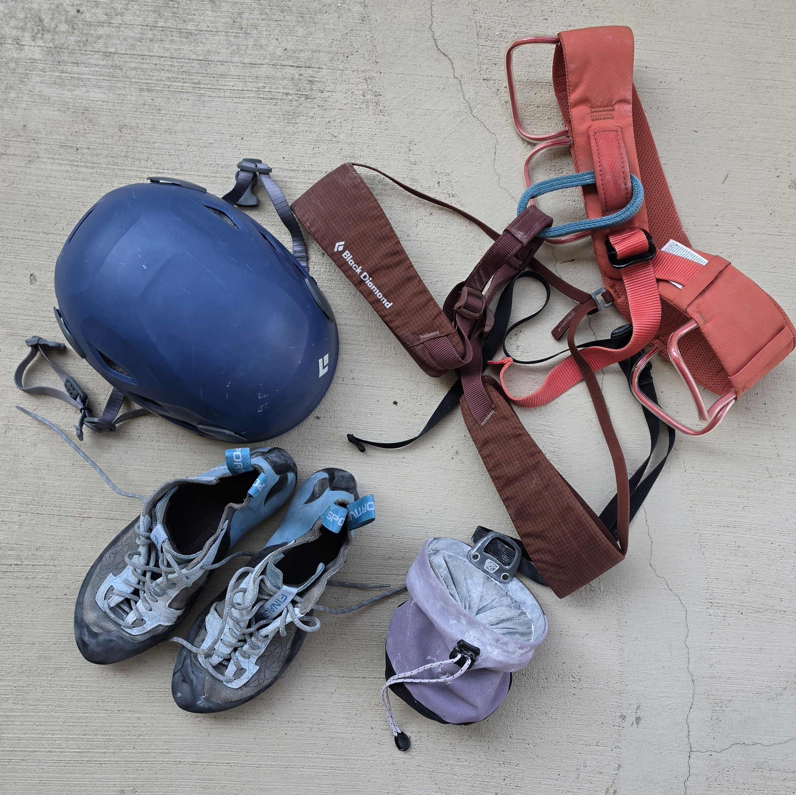
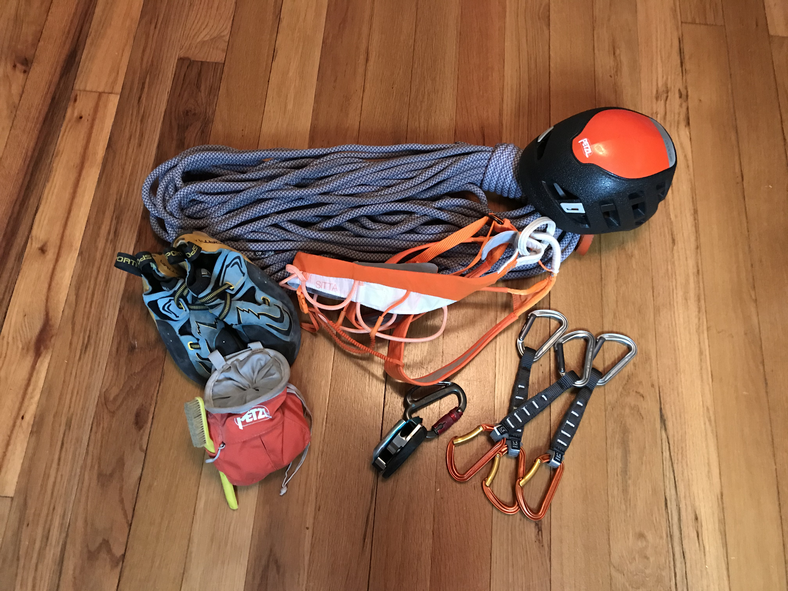

The Basics: Don't Go Without These

If you're wanting to dip your toe into climbing, there are a few staple pieces of gear you should start your collection with: chalk, shoes, harness, and helmet. These are elements that you want to be your own. This way it fits right, feels right, and keeps you safe.
Climbing chalk is just about the cheapest gear you'll buy. It helps you keep your grip. You'll also want a chalk bag to keep it contained.
Decent shoes are essential to progress in skill level. You want your climbing shoe to be snug—your toes should be touching the end! Starting out, you don't want them to be so tight that it hurts to stand, but you also don't want too much wiggle room for your piggly wigglies.
A harness is how you will stay safe on any roped climb. This is how you tie into the rope on the wall, and also how you connect yourself to the rope on the ground when you belay someone else.
Though not required inside, a helmet is essential for safety on any outdoor sport or trad climb. In case of a nasty fall, it protects your head. But also as a belayer, sometimes things come off the wall, like small rocks; a helmet on the ground helps you remain safe as well from unexpected mishaps.
Gear Cheat Sheet
- Climbing shoes
- Made with a high-quality rubber on the sole, toe, and heel, these special shoes stick to the wall much better than any sneaker could, and its form-fitting style allows you to move and place your feet with precision.
- Chalk
- Helps keep your grip on the wall by drying out any sweat on your hands and adding extra texture for better surface area. It is available as a very fine powder, compact chunks, or even in liquid form.
- Harness
- A proper harness has belt for your waist and both legs, as well as a belay loop connecting them.
- Chalk Bag
- A fabric bag that holds powder or chunky chalk. There are larger ones intended for bouldering, or smaller ones with a waist strap intended for sport or trad climbing.
- Crash Pad
- Usually about 3' by 4' and 3-5" thick, this is placed under a climber on an outdoor bouldering problem to provide a safe place to land.
- Belay Device
- Acts as a friction brake, and operated by a belayer to catch a climber.
- Assisted-Braking Device
- A belay device that automatically pinches and locks the rope when a sudden, fast pull occurs, which helps a belayer catch falls more easily.
- ATC
- A classic belay device that creates friction when the rope is loaded.
- Locking Carabiner
- A carabiner that features a metal loop which prevents the gate of the carabiner from accidentally opening. It requires more effort to open than simply pushing in the gate, either by unscrewing or twisting a sleeve.
- Quickdraw
- Two carabiners attached with a strap, used in sport climbing. One side goes into the bolt, the other to your rope.
- Cams
- Spring-loaded devices that expand when placed into a crack and released by the climber. Used in trad climbing.
- Nuts
- Pieces of metal that a climber seats into a crack that will wedge itself deeper if the climber falls. Used in trad climbing.
Bouldering Gear

In the climbing gym, it is beneficial to have climbing shoes and chalk, but that's really all that is necessary inside. For safety outside, bring a crash pad. You'll want a soft place to land when you inevitably fall. Many gear companies make them with straps so you can take them with you to the crag on your back without much hassle.
Rope Gear

Once you get into sport climbing, more gear comes with the territory. You need safe ways to get on and off the wall, and to stay safe while you're up there. The first obvious piece of gear is rope. You'll want rope rated for climbing, and rope that is long enough to take you all the way up and all the way back down. To attach yourself to your rope, you need a harness. Make sure your harness is intended for rock climbing. If you are the climber, inside on top rope, that is all you need. However, a belayer also needs a belay device. There are many types of belay devices on the market, but two of the most common ones are an ATC and a GRIGRI ("gree-gree"). An ATC is the cheapest, simplest belay device, but does require a bit more TLC than a GRIGRI. A GRIGRI is an assisted belay device, which helps to take some of the load off the belayer's hand by locking in place when the climber puts weight on their side of the rope. It is not foolproof, so it is still important for the belayer to pay attention to the climber. To keep the belay device attached, it must be connected to the belayer's harness with a locking carabiner. This must also be rated for climbing, as weak ones cannot take the force of a climber's fall. If you're climbing any sport route outside, don't forget your helmet!
Once we move to lead climbing, we'll start adding more gear. This is the point where it is necessary to have your own rope. Most gyms don't rent these out, and you'll definitely need one outside. You'll also need your own quickdraws outside. This is how you will clip your rope into the bolts on the way up. Gyms set these up for you, but when you plan your outdoor route, make sure you have enough quickdraws to get to the top!
Trad routes use a different type of quickdraw that is longer. They also don't follow bolts up the wall, but place their own gear on the way up. These are cams and nuts. Cams and nuts come in different sizes, and a climber must be confident in their skills to place these devices in a place that will successfully catch them if they fall.